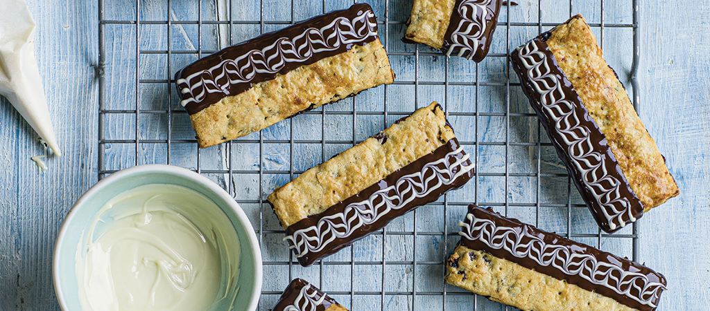

Prue's Garibaldi Biscuits

Description
Named to honour Italian General Giuseppe Garibaldi, who visited England in the 1850s, these are a dried-fruit pastry sandwich, here using sweet currants and tart cranberries plumped up with tangy orange juice. Ours have the bonus of being half-dipped in rich chocolate.
Ingredients
- 150g currants, roughly chopped
- 50g dried cranberries, roughly chopped
- 150ml orange juice
- 125g self-raising flour
- pinch of salt
- 75g caster sugar
- 1 large egg, separated
To decorate
- 200g 54% dark chocolate, broken into pieces
- 100g white chocolate, broken into pieces
Method
- Make the biscuits. Heat the oven to 180°C/160°C fan/350°F/Gas 4. Place the currants and cranberries in a small pan with the orange juice and bring to the boil over a medium heat. Reduce the heat slightly, then simmer for 5 minutes, until the fruit has softened. Remove the pan from the heat, then drain the fruit, discarding the orange juice. Spread the fruit out on a plate lined with kitchen paper to cool and remove any excess moisture
- Sift the flour and salt into a mixing bowl. Add the butter and rub it into the flour with your fingertips until the mixture resembles fine breadcrumbs. Mix in the caster sugar until combined.
- Add the egg yolk and 1 tablespoon of water and mix with a table knife until the mixture comes together to form a firm dough. Knead the dough very gently into a ball, then flatten it into a disc. Wrap the disc and chill it for 20 minutes.
- Lightly dust the work surface with flour, cut the dough in half and roll out each piece to a 20 x 15cm rectangle (about 3mm thick).
- Lightly brush one of the rectangles with beaten egg white, then scatter the soaked currants and cranberries evenly over the top. Lay the second rectangle of pastry directly on top to cover.
- Dust the work surface with a little more flour, then evenly roll out the layered pastry and fruit into a 25 x 20cm rectangle. Trim the edges neatly, then cut the rectangle lengthways in half. Cut each new rectangle of pastry crossways into 6 equal biscuits (each about 9cm long x 3.5cm wide), to make 12 biscuits in total. Prick the dough all over with a fork and brush with the remaining beaten egg white.
- Place the biscuits on the lined baking tray, spacing them out evenly. Bake for 12-15 minutes, until light golden brown. Remove the biscuits from the oven and leave them to cool on the tray for 5 minutes, then transfer them to a wire rack to cool completely.
- Decorate the biscuits. While the biscuits are cooling, melt the dark chocolate in a heatproof bowl set over a pan of gently simmering water, stirring until smooth. Pour the melted chocolate into a wide, shallow bowl or large ramekin. At the same time, melt the white chocolate in a separate heatproof bowl in the same way, then spoon it into the small piping bag fitted with a small writing nozzle.
- Dip one long side of one biscuit into the melted dark chocolate until it is half coated. Scrape the bottom of the biscuit along the edge of the bowl to remove any excess chocolate on the base, then place it on a wire rack.
- Pipe 3 thin lines of white chocolate lengthways down the dark chocolate coating. Using the cocktail stick, drag the lines of white chocolate first one way towards the centre of the biscuit, then in the opposite direction towards the edge of the biscuit, repeating to make a feather pattern across the coated half of the biscuit. Repeat with the remaining biscuits. Once you have decorated all of the biscuits, chill them for 5 minutes, until set, before serving.